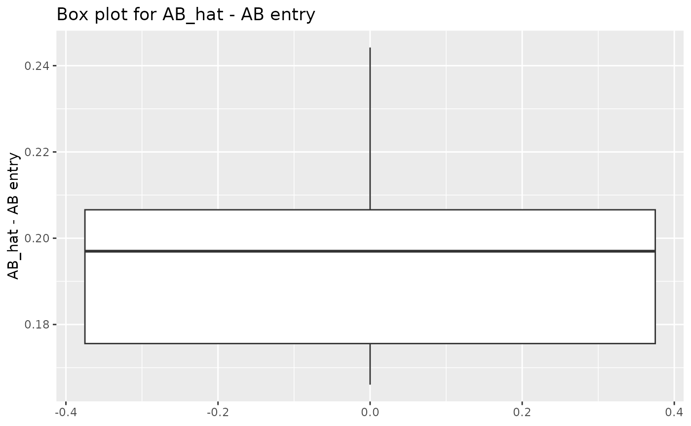
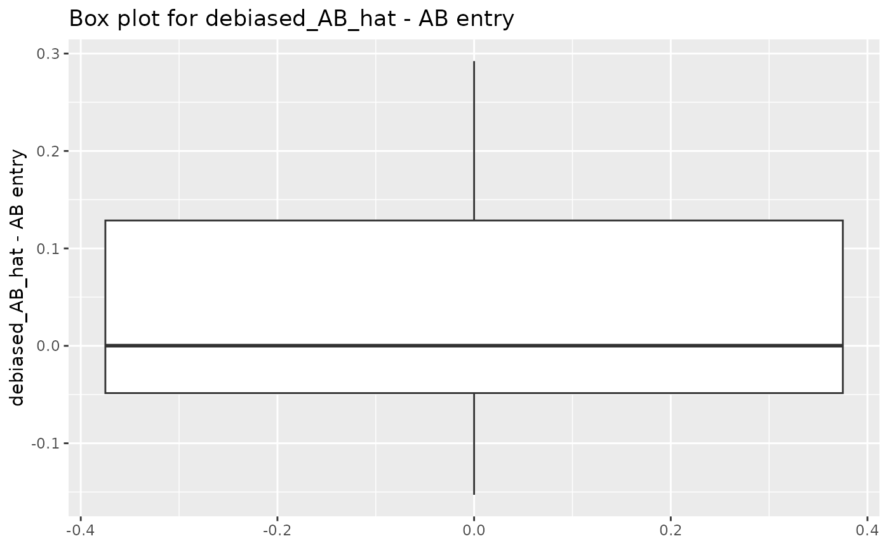

A example of using DRRsimulation
Zhilong Zhang
2024-06-07
DRRsimulation.RmdThis is an example to run debiased reduce rank regression simulation using DRRsimulaion. For convenience, number of trials is set to be a small number (eloop = 10). Typically eloop >= 100 is recommended to get a good approximation of the expectation.
install_github("tye27/mr.divw")
#> Using github PAT from envvar GITHUB_PAT. Use `gitcreds::gitcreds_set()` and unset GITHUB_PAT in .Renviron (or elsewhere) if you want to use the more secure git credential store instead.
#> Skipping install of 'mr.divw' from a github remote, the SHA1 (86ec1b88) has not changed since last install.
#> Use `force = TRUE` to force installation
library(DRRsimulation)
library(mr.divw)
library(matrixStats)
library(MASS)
library(ggplot2)
library(tidyverse)
#> ── Attaching core tidyverse packages ──────────────────────── tidyverse 2.0.0 ──
#> ✔ dplyr 1.1.4 ✔ readr 2.1.5
#> ✔ forcats 1.0.0 ✔ stringr 1.5.1
#> ✔ lubridate 1.9.3 ✔ tibble 3.2.1
#> ✔ purrr 1.0.2 ✔ tidyr 1.3.1
#> ── Conflicts ────────────────────────────────────────── tidyverse_conflicts() ──
#> ✖ dplyr::count() masks matrixStats::count()
#> ✖ dplyr::filter() masks stats::filter()
#> ✖ dplyr::lag() masks stats::lag()
#> ✖ dplyr::select() masks MASS::select()
#> ℹ Use the conflicted package (<http://conflicted.r-lib.org/>) to force all conflicts to become errors
library(patchwork)
#>
#> Attaching package: 'patchwork'
#>
#> The following object is masked from 'package:MASS':
#>
#> area
data("bmi.cad")
load('multivariate_data_medium.rda')
set.seed(2024)
# run the simulation -----------------------------------------------------------
sample_weight_list = c(5, 2, 1, 0.5, 0.2)
eloop = 10
result_AB_list = list("5" = NA, "2" = NA, "1" = NA, "0.5" = NA, "0.2" = NA)
result_A_list = list("5" = NA, "2" = NA, "1" = NA, "0.5" = NA, "0.2" = NA)
result_B_list = list("5" = NA, "2" = NA, "1" = NA, "0.5" = NA, "0.2" = NA)
result_A_d_list = list("5" = NA, "2" = NA, "1" = NA, "0.5" = NA, "0.2" = NA)
result_B_d_list = list("5" = NA, "2" = NA, "1" = NA, "0.5" = NA, "0.2" = NA)
result_AB_d_list = list("5" = NA, "2" = NA, "1" = NA, "0.5" = NA, "0.2" = NA)
for (sample_weight in sample_weight_list) {
parameters = get_parameters(sample_weight)
AB = parameters$AB
A = parameters$A
B = parameters$B
norm_A_list = norm_A_d_list = rep(NA, eloop)
norm_B_list = norm_B_d_list = rep(NA, eloop)
bias_AB_matrix = bias_AB_d_matrix = matrix(NA, nrow = 72, ncol = eloop)
B_star = t(B) # in order to compute the norm
for (i in 1:eloop) {
simulation_result = simulation(parameters, n=1000)
A_hat = simulation_result[[1]]
B_hat = simulation_result[[2]]
B_hat_star = t(simulation_result[[2]])
AB_hat = simulation_result[[3]]
temp_A = A_hat %*% solve(t(A_hat) %*% A_hat) %*% t(A_hat) - A %*% solve(t(A) %*% A) %*% t(A)
temp_B = B_hat_star %*% solve(t(B_hat_star) %*% B_hat_star) %*% t(B_hat_star) - B_star %*% solve(t(B_star) %*% B_star) %*% t(B_star)
norm_A_list[i] = norm(temp_A, type = "F")
norm_B_list[i] = norm(temp_B, type = "F")
bias_AB_vectorized = as.vector(AB_hat - AB)
bias_AB_matrix[,i] = bias_AB_vectorized
A_d_hat = simulation_result[[4]]
B_d_hat = simulation_result[[5]]
B_d_hat_star = t(simulation_result[[5]])
AB_d_hat = simulation_result[[6]]
temp_A_d = A_d_hat %*% solve(t(A_d_hat) %*% A_d_hat) %*% t(A_d_hat) - A %*% solve(t(A) %*% A) %*% t(A)
temp_B_d = B_d_hat_star %*% solve(t(B_d_hat_star) %*% B_d_hat_star) %*% t(B_d_hat_star) - B_star %*% solve(t(B_star) %*% B_star) %*% t(B_star)
norm_A_d_list[i] = norm(temp_A_d, type = "F")
norm_B_d_list[i] = norm(temp_B_d, type = "F")
bias_AB_d_vectorized = as.vector(AB_d_hat - AB)
bias_AB_d_matrix[,i] = bias_AB_d_vectorized
}
char <- as.character(sample_weight)
result_AB_list[[char]] = bias_AB_matrix
result_AB_d_list[[char]] = bias_AB_d_matrix
result_A_list[[char]] = norm_A_list
result_B_list[[char]] = norm_B_list
result_A_d_list[[char]] = norm_A_d_list
result_B_d_list[[char]] = norm_B_d_list
}
# plot the results -------------------------------------------------------------
# functions ----
# a function to get location of a matrix from the vector index
get_index <- function(i) {
return(c(i - ((i-1) %/% 8) * 8, (i-1) %/% 8 + 1))
}
plot_entrybias = function (data) {
ggplot()+
geom_boxplot(aes(y = data))+
labs(title = "Box plot for AB_hat - AB entry", y = "AB_hat - AB entry")
}
plot_entrybias_d = function (data) {
ggplot()+
geom_boxplot(aes(y = data))+
labs(title = "Box plot for debiased_AB_hat - AB entry", y = "debiased_AB_hat - AB entry")
}
# boxplot the bias of AB_hat -----------------------------------------------------------
weight_to_plot <- "0.2" # choose the weight to plot for AB
myplots <- apply(result_AB_list[[weight_to_plot]], MARGIN = 1, plot_entrybias)
for (i in 1:72){
names(myplots)[i] <- paste0("(", paste(get_index(i)[1], sep = ", ", get_index(i)[2]), ")")
}
abs_mean_entry_bias <- rep(NA, 72)
sd_entry_bias <- rep(NA, 72)
for (i in 1:72) {
abs_mean_entry_bias[i] <- abs(mean(result_AB_list[[weight_to_plot]][i,]))
sd_entry_bias[i] <- sd(result_AB_list[[weight_to_plot]][i,])
}
index1 <- order(abs_mean_entry_bias, decreasing = T)
index2 <- order(sd_entry_bias, decreasing = T)
myplots[index1[5:1]] #select entries with the top 5 bias with naive reduced rank estimator
#> $`(4, 4)`#>
#> $`(8, 8)`#>
#> $`(7, 1)`#>
#> $`(5, 4)`#>
#> $`(8, 1)`
# boxplot the bias of AB_d_hat ------------------------------------------------------------
weight_to_plot <- "0.2"
myplots_d <- apply(result_AB_d_list[[weight_to_plot]], MARGIN = 1, plot_entrybias_d)
for (i in 1:72){
names(myplots_d)[i] <- paste0("(", paste(get_index(i)[1], sep = ", ", get_index(i)[2]), ")")
}
abs_mean_entry_bias_d <- rep(NA, 72)
sd_entry_bias_d <- rep(NA, 72)
for (i in 1:72) {
abs_mean_entry_bias_d[i] <- abs(mean(result_AB_d_list[[weight_to_plot]][i,]))
sd_entry_bias_d[i] <- sd(result_AB_d_list[[weight_to_plot]][i,])
}
index1_d <- order(abs_mean_entry_bias_d, decreasing = T)
index2_d <- order(sd_entry_bias_d, decreasing = T)
myplots_d[index1_d[5:1]] #select entries with the top 5 bias with debiased reduced rank estimator
#> $`(7, 9)`#>
#> $`(8, 9)`
#>
#> $`(5, 8)`#>
#> $`(5, 9)`#>
#> $`(8, 7)`